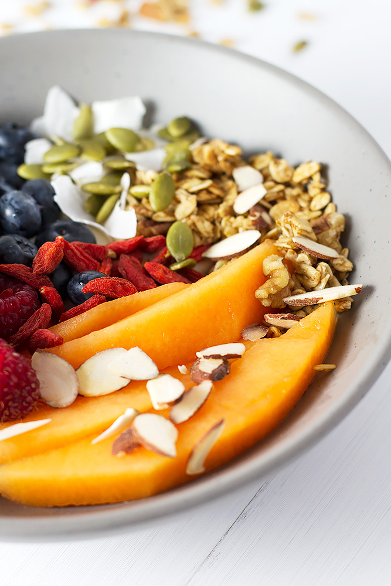

Granola & Yogurt Bowl

Description
Because every morning needs to start off with a bang! And this granola and yogurt bowl does just that. So yummy, so delicious, and you can make it in a jiffy!
- Level: Easy
- Total time: 5 minutes
- Preparation time: 5 minutes
- Yield: 1 serving
Ingredients
Steps
-
Place the yogurt in a bowl.
-
Add the washed fruit.
-
Top with seeds, nuts, coconut, and granola.
-
Serve immediately.